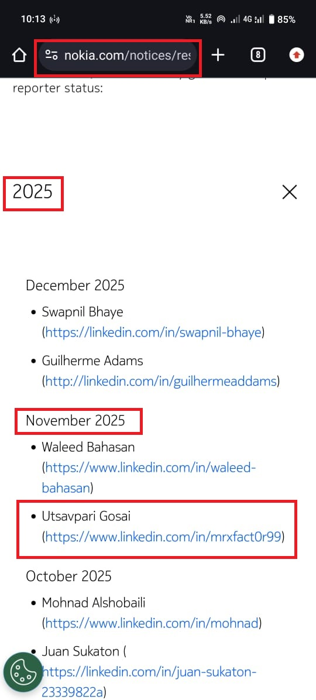

Hello Hackers,

I hope you all are doing well. Today, I have some great news to share with you all. I was officially acknowledged in Nokia’s Hall of Fame — a company whose phone was my very first mobile device. This moment was truly special and full of pride for me. 🏆
Let me share how this journey went.
While hunting on Nokia’s program, I encountered a very frustrating phase. Within just 1–2 months, I received around 15 duplicate reports. Honestly, this is more than enough to make any bug hunter think about giving up.
At one point, I also felt demotivated. But my best friend and the biggest hacker of the multiverse, Shiva, never allowed me to quit. He kept pushing me to try again.
One night at around 2:30 AM, I decided to give it one last try. I found a potential issue, submitted the report, and… boom 💥 — it was accepted.
Vulnerability Type
The issue was a Security Misconfiguration. This type of bug is often ignored by companies or considered non-impactful, but acceptance depends on how well you explain the risk and validation logic.
Steps to Reproduce
2. Fill in all required details and check the “Accept Terms & Conditions” box
3. Intercept the request using Burp Suite
4. Modify the T&C parameter (remove it or change true to false)
5. Forward the request
Result:
If the account is created successfully without accepting the Terms & Conditions,
the vulnerability exists.
If the server rejects the request or asks to accept the T&C, then it is properly validated.
Impact
- Users can bypass the company’s Terms & Conditions
- No server-side validation is enforced
- Validation exists only on the client side
- This leads to legal and compliance risks for the organization
This small but impactful issue helped me secure a place in Nokia’s Hall of Fame.
Hall Of Fame: https://www.nokia.com/notices/responsible-disclosure/

I would like to give special thanks to my Best Friend ❤️ and the biggest hacker of the multiverse 🌌 Shiva 🕉️ for motivating me during my lowest phase and never letting me give up. 🙌
Thank You,
MR.X FACTOR 🚀
🔗 Connect With Me
- Linktree: https://linktr.ee/mrxfact0r_99